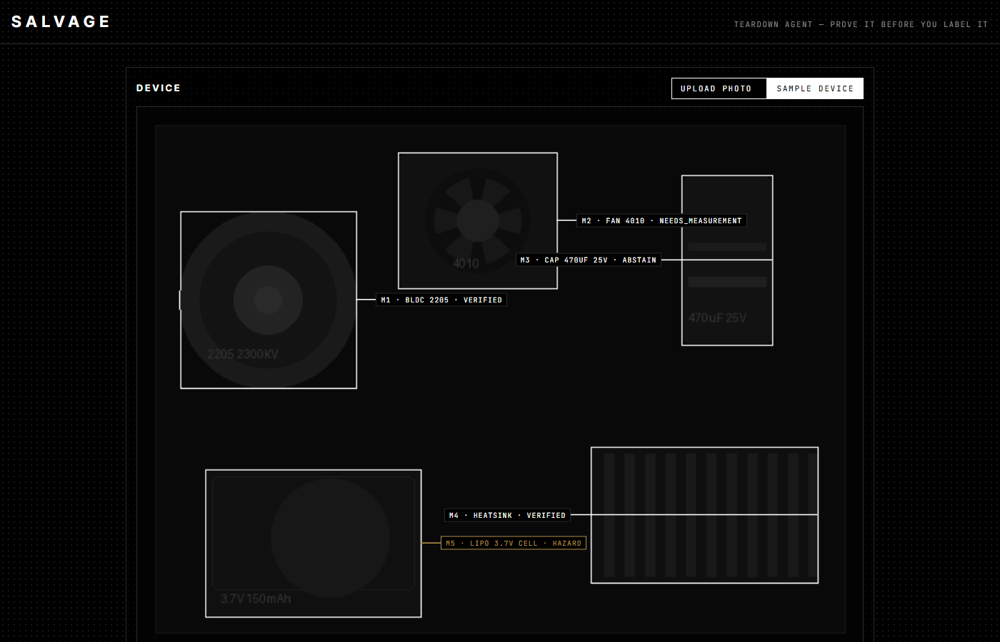

Eyes
SAM 3.1
Meta's segmentation model finds and outlines every part from text prompts like "electrolytic capacitor". Runs through the Meta Model API, or the open weights on a GPU.
Salvage looks inside broken electronics, works out which parts are still good, and refuses to call a part good until the evidence says so. When it isn't sure, it asks for one cheap measurement instead of guessing.
I build things out of dead electronics. A drone with a cracked frame still has four good motors, an ESC, a camera and a battery, but you only find that out after an hour with a multimeter. Vision models can name parts from a photo now, and they're usually right. "Usually" is the problem. If a model calls a dead motor good, you wire it into your next build and lose an afternoon. If it calls a swollen lithium cell good, someone gets hurt.
So Salvage is built around one rule: a label has to be earned. Several models have to agree, the agreement has to survive plain-code checks, and anything that can be settled with a meter gets measured. Everything else is marked as unknown, out loud.
Meta's segmentation model finds and outlines every part from text prompts like "electrolytic capacitor". Runs through the Meta Model API, or the open weights on a GPU.
Each reader names the part, reads its markings, rates its condition and quotes the evidence it actually sees. Mixing model families means their mistakes don't line up.
Decides the final state from the readers' votes, hazard rules, consistency checks and any measurement. It's deterministic and testable line by line.
Verified parts are stored with their ratings. Ask for what you need and it searches your own shelf first, and never returns a hazard or an unknown part.

Swollen lithium cells, CRT and flyback circuits, microwave high-voltage parts, mains primary sides. Checked first, wins over everything, and the verdict says what to do instead.
Fewer than two readers, agreement below two thirds, readers contradicting each other on whether it works, or a marking that doesn't fit the part family. It says "I don't know."
The readers agree, but a cheap check would settle it: motor winding resistance, cell voltage, fan spin, fuse continuity, capacitor ESR. It tells you exactly what to measure and the range to expect.
The readers agree, and either the measurement landed in range or the part doesn't need one.
Try it locally: pip install -e . then python -m uvicorn salvage.web.app:get_app --factory and press "Sample device".